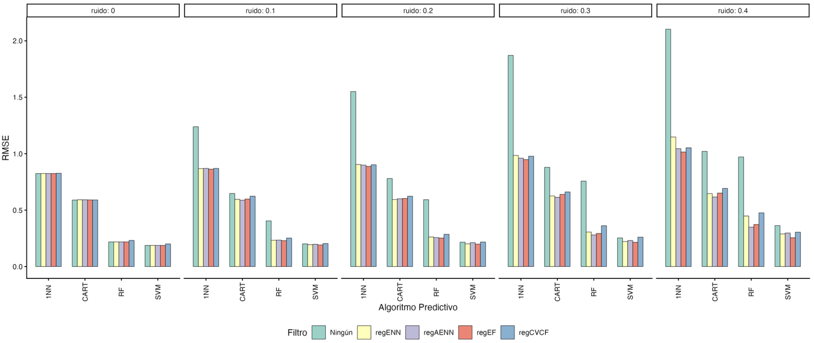

Evapotranspiration
Trabajo Fin de Máster sobre la robustez de modelos de minería de datos frente al ruido en la estimación de la evapotranspiración para agricultura inteligente.

01 · RESEARCH QUESTION
¿Cómo afecta el ruido al rendimiento de los modelos?
El estudio analiza cómo la introducción progresiva de ruido en la variable objetivo afecta al rendimiento de distintos modelos de minería de datos aplicados a la estimación de la evapotranspiración.
02 · EXPERIMENT
Contaminación progresiva de los datos
Se estudia el comportamiento de diferentes algoritmos a medida que aumenta el porcentaje de ruido introducido en la variable dependiente.
1NN
Presenta la mayor vulnerabilidad frente a la contaminación de la variable objetivo y su capacidad predictiva se deteriora rápidamente.
SVM / Random Forest
Muestran una mayor robustez global frente a niveles elevados de ruido.
03 · FILTERING
Filtrar antes de modelar
Se aplican técnicas de filtrado adaptadas a regresión para eliminar instancias conflictivas antes del entrenamiento y reducir el impacto de las observaciones ruidosas.
Datos con ruido → Filtro → Conjunto depurado → Modelo → Evaluación
04 · MAIN RESULT
El efecto del filtrado se vuelve especialmente relevante desde el 20 % de ruido
Los análisis estadísticos muestran que las mejoras observadas tras el filtrado son consistentes y no se explican simplemente por variación aleatoria.
05 · STATISTICAL VALIDATION
La mejora se contrasta estadísticamente
La evaluación utiliza validación cruzada repetida y contrastes no paramétricos. El test de Friedman permite evaluar diferencias globales entre estrategias, mientras que las comparaciones pareadas de Wilcoxon permiten estudiar diferencias concretas.
La corrección de Holm controla el efecto de las comparaciones múltiples.
06 · FILTER / MODEL SYNERGY
No existe un filtro universal
La eficacia de cada estrategia depende de la combinación entre filtro, algoritmo y nivel de ruido.
regEF
Se consolida como una estrategia especialmente compatible con 1NN y SVM.
regAENN
Obtiene las métricas óptimas junto a los árboles de decisión.
07 · CONCLUSION
Robustez mediante preprocesamiento
Los resultados muestran que el preprocesamiento puede desempeñar un papel crítico en el aprendizaje robusto cuando los datos contienen observaciones ruidosas. La combinación adecuada entre filtro y algoritmo permite mantener un comportamiento operativo incluso en escenarios de contaminación elevada.
08 · FUTURE WORK
Siguientes pasos
- Aplicar los filtros sobre conjuntos de datos con ruido real procedente de sensores.
- Analizar estructuras temporales y dependencias estacionales.
- Validar los resultados en diferentes regiones climáticas.
09 · TECH STACK